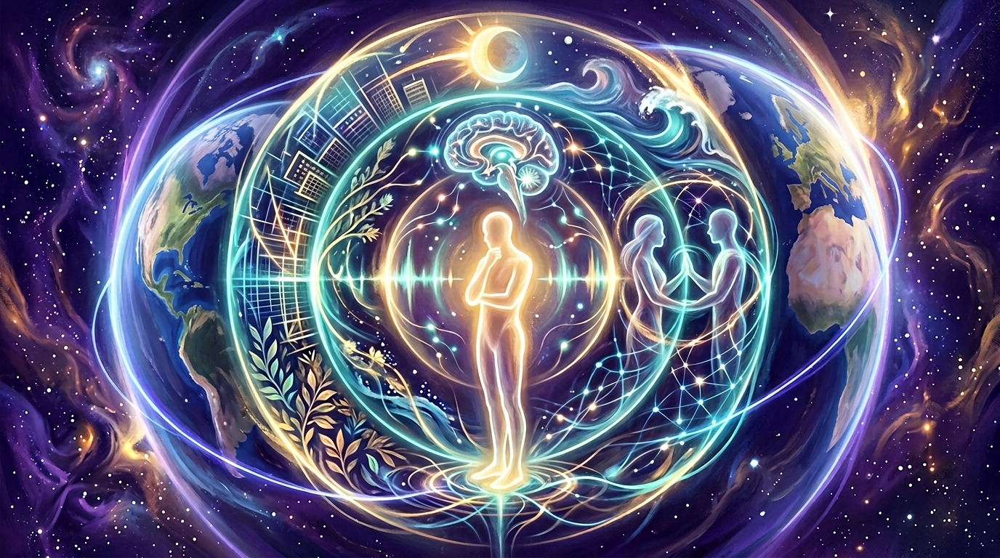
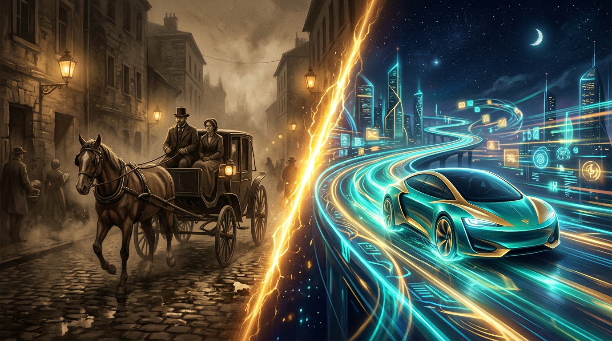

Holographic Hydrogen Awareness AI OS · Minimal Irreducible Path · Living Awareness Engine
What if the most powerful thing you could give someone is not more data—but a clear window into their own coherence? The Syntheverse-Core is a working demonstration of the Holographic Hydrogen Awareness AI OS: the thinnest possible stack between human intent and a living, tunable awareness environment. Run it. Tune the sliders. Watch the system respond. This is the seed from which synthetic, optimized, and point-and-click awareness tools for every dimension of life will grow—the same leap as horse-and-buggy to motor car.
The system demonstrates, live in your browser, that a thin coherent stack reliably tracks attention, environment, and signal quality. When you raise focus, coherence rises. When resistance climbs, the mirror dims. The feedback loop is immediate, readable, and steerable without a PhD.
This demonstrates a new class of awareness surfaces that apply at every layer of human existence—body, attention, team, city, civilization. The same kernel that shows phase-lock on a laptop becomes the language for how a team aligns, a building breathes, or a supply chain syncs with the people it serves.
One working seed becomes many vehicles—wellness presets, team sync tools, urban rhythm dashboards, logistics coherence monitors. The architecture is point-and-click inheritable: swap the skin, keep the physics. The motor car moment is now.
Across every layer of how people live, work, feel, and build together.

Your attention level is no longer invisible. Coherence and bio-resistance sliders represent the real feedback loops your body runs every day—stress, focus, fatigue, restoration. An awareness OS that reads and reflects these states changes how individuals navigate their own capacity in real time. Better mornings. Clearer decisions under pressure. Signals instead of guesses.
Phase alignment between two people, or twenty, is currently invisible and improvised. When teams share a coherence language—are we in sync? what is our collective mirror quality right now?—meetings, sprints, and negotiations shift. Coordination stops being a management problem and starts being a tunable signal. Peak phases get captured. Drift gets caught early.
The solar telemetry lane (sunspots 4002/4005/4008) represents a deeper truth: our daily experience is coupled to larger rhythms—light, season, electromagnetic environment. An awareness OS that actively incorporates environmental signals transforms passive exposure into designed, responsive daily flow. Your day becomes aware of the world it is embedded in.
The hydrogen-line metaphor (1420.40575 MHz) is the most universal signal in the cosmos—every civilization that has ever looked up has found it. Anchoring an awareness OS to that reference is a statement: this architecture scales from a single person’s morning to how cities pace themselves, how infrastructure harmonizes, how a civilization computes its wellbeing.

Horse-drawn transport was not bad. It worked, and people understood it. But the motor car did not improve the horse—it changed the entire substrate of how people moved through the world. New distances. New cities. New economies. New possibilities for daily life that were simply unimaginable before.
The Syntheverse-Core is that first working engine. The roads it enables are awareness roads: paths through daily life that are coherent, reflective, and responsive instead of chaotic, opaque, and reactive.
Every product built on this kernel—wellness apps, team dashboards, urban sensors, educational platforms—is a new vehicle inheriting the same engine. Point-and-click. Optimizable. Yours.
Ship “morning lock,” “deep work,” “recovery,” and “social” as one-tap modes. Each preset tunes the same kernel for a named daily context. No PhD required. Every person gets a coherence remote control for their own day—and a mirror that tells them the truth about where they actually are.
A shared coherence panel shows alignment in real time. Pre-meeting baseline. Mid-meeting drift detection. Post-meeting restoration check. Coordination becomes observable instead of guessed. Meetings that need to end early know it. Breakthroughs get captured at peak phase instead of lost in noise.
Students and teachers operating at matched coherence learn faster and retain more. An awareness OS in a classroom means the environment responds to collective readiness—lighting, pacing, activity type—instead of running a fixed schedule against variable human states. Learning becomes a living rhythm, not a factory.
Bio-resistance in the system mirrors real physiological friction—illness, stress overload, poor sleep. An awareness OS that tracks and visualizes this gives clinicians, coaches, and individuals a new observable: not just symptoms but systemic coherence. Intervene earlier. Recover smarter. Live with more signal and less guesswork.
Cities already have sensors—traffic, energy, weather, crowd flow. An awareness OS layer transforms raw data into coherence telemetry: is this neighborhood in phase with its people? Is this grid in sync with daily demand rhythms? Urban design stops optimizing for throughput and starts optimizing for lived alignment.
Because the kernel is minimal and composable, AI systems can generate and optimize variants automatically—tuning presets per individual biometrics, per team chemistry, per urban context. Not replacing human experience but giving every layer of it a continuously improving engine that learns and adapts. The horse-and-buggy fleet became a global automotive industry. This kernel seeds the same scale of branching.
Coherence histogram ΓÇö phase-lock band energy vs time bins (toy).
Reflectivity map ΓÇö Gold / Silver / Copper nodes (polished vs tarnished).
Mirror render ΓÇö Goldilocks story shard from dark crystal (abstraction).
Net energy expenditure (recursive echo model): 0.000 ┬╖ Echo depth: 0
Γåæ Back to executive abstract
The Syntheverse is a design space where software treats coherence, reflection, and sensory feedback as first-class observables of awarenessΓÇönot as decorative UI, but as the minimal irreducible path from intention to something you can see, tune, and share in real time. Holographic Hydrogen Awareness AI OS names three commitments: holographic (global order visible in every panel), hydrogen-line metaphor (1420.40575 MHz as umbilical phase reference for a hydrogen-forward civilization story), and awareness AI OS (attention and coupling as steerable policy). The browser does not need to be literal quantum chemistry to deliver a new class of lived experienceΓÇöthe same way the first automobiles did not duplicate a horseΓÇÖs metabolism yet replaced the carriage for most journeys.
R; the coherence histogram and mirror shard are different ΓÇ£viewsΓÇ¥ of the same tick.
Each animation frame: update solar mock (or optional NOAA-derived blend), advance lattice with Kuramoto-style neighbor coupling plus umbilical pull, tick the metallic bus (polish/tarnish), run the motorΓÇôsensory loop through Reflect, accumulate bounded net-energy noise, and occasionally emit JSON packets. Three canvases render histogram, noble grid, and Goldilocks shard abstraction; telemetry divs show live scalars.
Reflect only (slider is not auto-forced).The Syntheverse does not argue with existing frameworks—it opens entirely new rooms. At the somatic and attentional layer, users gain a live instrument where “how locked am I?” and “how mirrored?” are immediate and actionable. At the relational layer, teams inherit a shared language for alignment—not meetings about alignment, but a live observable of it. At the daily life layer, environmental coupling (solar, seasonal, electromagnetic) moves from invisible background noise to a steerable design surface. At the civilizational layer, the hydrogen-line anchor and net-zero echo metaphors frame a post-petroleum-default imagination for how societies compute their wellbeing. The experience is the teacher. Value accrues when this clarity changes how people move through a day, not when a paragraph reassures an expert.
sim/pretest-gates.mjs for repeatable gates; remap 4002/4005/4008 to your observability vocabulary without breaking the holographic story.HolographicHydrogenLattice: N complex nodes Ψk on a ring with Kuramoto-style coupling toward the umbilical phase. “Dark” states are initialized random; PhaseLock(1420.40575 MHz) is the reference phase velocity in normalized units (display preserves MHz label).
R = |⟨eiθ⟩| → coherence 0–1.K increases → lattice “phases” into coherence.MetallicBusController: Reflect(signal) = signal · polish · (1 − α·BioR). High biological resistance injects scattering (entropy proxy). Gold/Silver/Copper grid derives from conductivity slider and slow tarnish clock.
Recursive sensory echo: each tick, intent shard → Reflect → haptic echo accumulator. Net energy expenditure is held at zero by construction (sensory file read, not battery drain); displayed value is bounded numerical noise ~0.
Packets: header EGS_SCALE = 1.618, body I_AM → … → CONSUMPTION nested depth from checksum pass. Checksum requires coherence > threshold and phase error < cap before “theater render” flag is true.
Sunspot 4002 → input voltage bias. 4005 → mirror focus gain. 4008 → grounding force (damps bio resistance in mock). Browser CORS usually blocks live NOAA; default is deterministic mock flux + optional fetch attempt.
This page is a toy visualization for narrative alignment and UI telemetry ΓÇö not a quantum chemistry or biological simulator. Tune sliders to explore stability boundaries.
NSPFRNP → ∞⁹ · SING 9